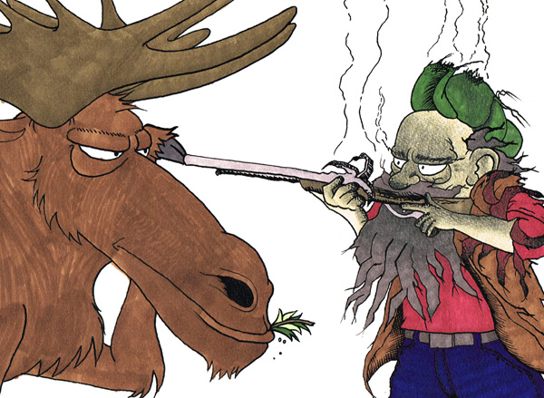

Elgjakt med varierande resultat i Sverige

VAULDALEN/VÄSTRA MALMANGEN (Dølingen)
På grensa mellom Vauldalen og Västre Malmangen er dei no i gong med elgjakta. Resultat er varierande,
då det vert brukt alt i frå heimelaga snarer til sprettert til nedstøva salongrifler.
Göran Feltsengsson (bilde) fekk til dømes eit ublidt møte med ein agressiv elg som ikkje hadde tenkt å bli jegergryte denne gongen.
Sjølv kom Göran i frå det heile utan skader, stod salongrifla ikkje til å redde.
Dermed står han utan salongrifle ut elgejakta.